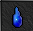
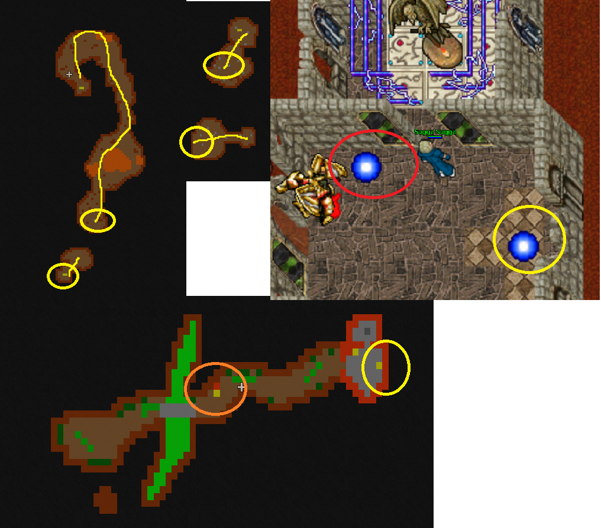
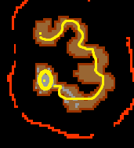
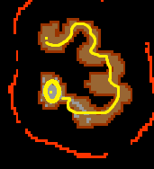

Helarctos set to Dark overlord set upgrade
Also known as: Underworld Axxion quest, Dark overlord quest
Recommended level: 500-700
Requirements:
Helarctos set
 Butterfly conservation kit 1
Butterfly conservation kit 1
 Botanist’s container 1
Botanist’s container 1
 Panda bear
Panda bear
 Frozen starlight
Frozen starlight
Tear of daraman
The items you need for this ugprade you are going to get through the quest. They are hidden on the way, you only need to get tear of daraman from map spawn somewhere in Outcast. 1 is spawned in helarctos quest before the last area with hybrids.
For starters, head up to edron boss run.


From edron boss run 1 checkpoint go South and very first red door teleporter on your right with hypergiant.
Follow the road to the end with some easier monsters and hop into the teleport there. Follow the road again and you’ll find yourself at the mountain. Get to the other side and go downstairs. Note: there’s a teleport to the North for depot, if you got cold feet!

As you find stairs leading downstairs go South, use exani tera or rope to get up and follow the road till you find a teleport. Follow the path till the end as you find checkpoint place with 2 teleporters.
So now if you wish to go to the depot (red circled), go on the left side. If you want to continue the quest , go right side teleport (yellow circled).
Ladders going down before this checkpoint is Endymions & Archmage Wands to Aratron or Aether Wands upgrade quest.

Now that you have jumped to RIGHT SIDE TELEPORT, follow the road past the labyrinth to the other side and go North for the panda bear quest.

And now you need to get past this medium sized labyrinth to the East. Find a teleport at the end and hop in.

As you get teleported to the pharaos, kill those and go stairs up in the middle of the room. Go West past the bridge. Now here you need to pull 2 levers in order to continue. They are on the right and left side from the place you come from. After pulling those go South.
 
Now as you arrive to this cross fork area, South-East has a chest you need for the upgrade and North-East fork has teleport to continue the quest.

Now go through the demons then ladders up.

Follow the road to South, few ladders here and there. At last there’s hole down to the final area.

As you arrive here, you’re gonna face at the middle area 1 canopus doradus. For the sides, there’s either suprhyres or hypergiants and xarptors/dark wizards downstairs. Other side has butterfly conservation kit 1 and other botanist’s container 1. Then the upgrade area is at the middle, most Northern place.